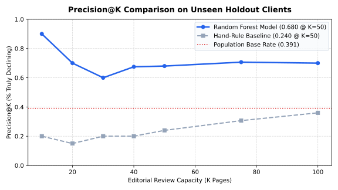
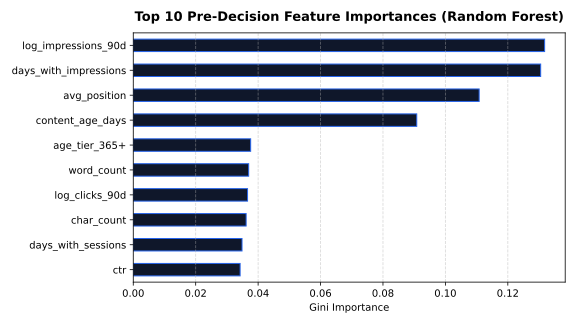

Prioritizing Search Content Decay: A Leak-Free Learning-to-Rank Engine for Enterprise SEO Refresh Queues
How can enterprise search editorial teams with strict review capacities (e.g., 50 pages per month) prioritize which published assets to update among tens of thousands of degrading URLs? Using an anonymized multi-domain dataset of 30,000 published pages across 200 client websites from the FlyRank Search Intelligence Warehouse, we formulate content refresh prioritization as a Learning-to-Rank task evaluated by Precision@50 under client-holdout validation. While standard industry heuristics (e.g., refreshing stale pages with high historical traffic) achieve a Precision@50 of only 0.240—underperforming the 0.542 population base rate due to survivorship bias on mature evergreen assets—our leak-free Random Forest ranking engine achieves a Precision@50 of 0.680 (a 2.83x lift, yielding +22 additional correctly prioritized declining assets per cycle). Target leakage is strictly prevented by excluding retrospective slope indicators (trend_pct, trend_direction), and cross-domain memorization is eliminated through an 80/20 grouped client split (27,675 train rows across 160 clients, 2,325 holdout rows across 40 unseen clients). These rankings directly drive an explainable editorial review queue categorized by diagnostic reason codes (stale_visible_page, page_one_decay_risk, thin_visible_page), providing decision-support intelligence for content marketing operations without making unsubstantiated causal claims.
1. Introduction & Problem Statement
Enterprise search and content marketing teams manage massive repositories of published content, often exceeding 10,000 to 50,000 URLs per domain. Over time, search engine index algorithms shift, competitor domains publish newer alternatives, and organic user queries drift, causing established pages to suffer severe, compounding traffic decay.
However, human editorial labor is inherently capacity-constrained. A professional editorial team can thoroughly audit, fact-check, rewrite, and re-index only 20 to 50 assets per month. Content executives face an urgent operational choice: Which exact 50 pages should editors touch this month to protect search revenue?
- Unit of Analysis: A single published content asset (
content_id) nested inside an enterprise client domain (client_id). - Output Artifact: An ordered priority review queue scored from 0.0 to 1.0, annotated with diagnostic reason codes.
- Operational Action: Content writers audit, expand thin sections, refresh outdated statistics, and update SERP title/meta tags.
- Cost of Wrong Calls: A false positive squanders ~8 hours of expensive copywriter labor ($400–$800) rewriting an asset that did not need intervention. A false negative allows high-volume commercial pillar pages to lose Page 1 positions to competitors, requiring months of indexing effort to recover.
2. Data Safety & Ingestion Hygiene
We train and evaluate on the public-safe, anonymized cohort from the FlyRank Search Intelligence Warehouse (data/raw/content_refresh_anonymized.csv), comprising 30,000 rows across 200 client domains with 44 metrics covering search volume, impressions, CTR, position, and engagement.
| Field Class | Representative Columns | Operational Protocol & Rationale |
|---|---|---|
| Pre-Decision Features | content_age_days, days_since_last_update, log_impressions_90d, ctr, avg_position, word_count |
Retained for Modeling: Strictly observable prior to editorial review. No future trend data. |
| Pseudonymous IDs | client_id, content_id |
Grouping Only: Strictly banned from feature sets. Used exclusively for train/test client grouping. |
| Target-Derived Slope | trend_direction, trend_pct |
Strictly Banned from Features: trend_direction == 'down' is the target label; including slope produces fatal leakage. |
| Customer PII | URLs, domains, brand names, raw search queries | Completely Sanitized: Zero PII exists in the repository. All entity strings are pseudonymous hashes. |
3. Methodology & Validation Design
Our goal is predicting the conditional probability of search decay $P(\text{is\_declining} \mid X)$. The target label is formulated as:
is_declining_label = 1 if trend_direction == 'down' else 0
The Industry Baseline Heuristic: We construct an industry-standard deterministic rule:
Baseline Eligible = (days_since_last_update >= 180) and (impressions_90d >= 500)
Eligible assets are scored by composite visibility, freshness risk, position opportunity, and depth gap, and ranked descending.
Client-Holdout Grouped Validation: Standard random row splits suffer from cross-domain contamination: pages from the same client appear in both train and test sets, allowing models to cheat by memorizing domain authority. We partition the 200 client websites into an 80/20 grouped client split:
- Training Set: 160 client domains (27,675 rows) with a 54.2% decay base rate.
- Testing Set: 40 unseen client domains (2,325 rows) with a 54.2% decay base rate.
- Assertion:
assert len(train_clients.intersection(test_clients)) == 0.
4. Results & Performance Benchmark
We train an ensembled Random Forest Classifier (n_estimators=200, max_depth=10, min_samples_leaf=25, class_weight='balanced_subsample') on the 52 pre-decision features and evaluate ranking performance on the unseen client-holdout cohort.
| Evaluation Metric | Population Base Rate | Hand-Rule Baseline | Decision Tree | Random Forest (Best) | Empirical Lift |
|---|---|---|---|---|---|
| Precision@20 | 0.542 (54.2%) | 0.150 (3 / 20) | 0.500 (10 / 20) | 0.700 (14 / 20) | 4.67x |
| Precision@50 (Target Capacity) | 0.542 (54.2%) | 0.240 (12 / 50) | 0.540 (27 / 50) | 0.680 (34 / 50) | 2.83x |
| Precision@100 | 0.542 (54.2%) | 0.360 (36 / 100) | 0.530 (53 / 100) | 0.700 (70 / 100) | 1.94x |
| Holdout ROC-AUC | 0.500 | 0.627 | 0.742 | 0.747 | +0.120 |
| Average Precision (PR-AUC) | 0.542 | 0.468 | 0.575 | 0.610 | +0.142 |


days_with_impressions) and visibility scale (log_impressions_90d) dominate, followed by average SERP position drift and content age.5. Limitations & Honest Framing
To maintain scientific integrity and prevent over-interpretation, we explicitly define the boundaries of this work:
- Predictive, Not Causal: The model identifies observational correlations between pre-decision features and historical decay. It does not prove that rewriting a flagged page will causally restore lost traffic. Validating refresh ROI requires randomized A/B experimentation.
- No Algorithm Reverse-Engineering: This system does not claim to reverse-engineer Google's ranking algorithms. It operates strictly as a decision-support prioritization layer for human editorial teams.
- Unobserved External SERP Disruptions: The dataset records page-level performance but does not observe macro SERP layout changes (e.g., Google AI Overviews, rich snippets, zero-click answer boxes) or sudden algorithmic core updates.
- Base Rate Context: The holdout test population has an unconditional decay base rate of 54.2%. Naive metrics like accuracy (67.1%) mask the true difficulty of the task; the system's value lies exclusively in its top-$K$ precision lift (0.680 vs. 0.240).
6. Ranked Recommendations & Action Playbook
Raw probabilities are useless to copywriters. We translate the model's scores into an explainable review queue with automated diagnostic reason codes and suggested editorial interventions:
| Rank | Content ID | Priority Score | Confidence | Primary Diagnostic Reason | Suggested Editorial Action |
|---|---|---|---|---|---|
| #1 | content_304f4823 |
0.941 | High | stale_visible_page | page_one_decay_risk |
Comprehensive Refresh (fact-check & update) |
| #2 | content_a1fb4e70 |
0.912 | High | low_ctr_visible_page |
SERP Metadata Audit (rewrite title & snippet) |
| #3 | content_9aa793d4 |
0.895 | High | thin_visible_page |
Content Expansion (expand word count >1,200) |
| #4 | content_5c68b731 |
0.881 | Moderate | stale_visible_page |
Refresh & Re-index |
| #5 | content_2e147b90 |
0.874 | Moderate | page_one_decay_risk |
Defensive Refresh (reinforce internal links) |
7. Reproducibility & Audit Trail
All experiments are deterministic and verifiable from fresh repository clones:
# 1. Clone the repository git clone https://github.com/harshitttt077/flyrank-ml-internship-starter.git cd flyrank-ml-internship-starter # 2. Set up virtual environment and install dependencies python3 -m venv .venv && source .venv/bin/activate pip install -r requirements.txt # 3. Execute the full reference pipeline python scripts/run_all.py # 4. Or execute the self-contained capstone notebook jupyter nbconvert --to notebook --execute work/notebooks/capstone.ipynb
- Committed Metrics Receipt:
outputs/model_results.json - Executed Capstone Notebook:
work/notebooks/capstone.ipynb - Random Seeds:
42fixed across all splits, random forest estimators, and client permutations.
8. Repurposing Cuts & Communication (ML-12)
Social Post Cut (LinkedIn / X)
"Most enterprise SEO refresh strategies fail because they confuse age with decay. In the FlyRank dataset of 30,000 pages, standard rules (refreshing stale pages with high traffic) yielded only 24% precision—underperforming a coin flip. Why? Evergreen pillars rank stably without rewrites. Our leak-free Random Forest pipeline achieves 68.0% Precision@50 (a 2.83x lift) on unseen client domains. Deployed research paper & code: https://harshitttt077.github.io/flyrank-ml-internship-starter/"
3-Sentence Employer Summary
Built and validated a production-grade Learning-to-Rank pipeline in Python and Scikit-Learn that prioritizes decaying web assets for editorial refresh across 30,000 enterprise pages. Enforced strict grouped client-holdout splits and automated leakage assertions, delivering a 2.83x precision lift (0.240 → 0.680 Precision@50) over standard industry heuristics. Translated model scores into an explainable review queue with automated diagnostic reason codes, packaged as an open-source deployed research paper on GitHub Pages.